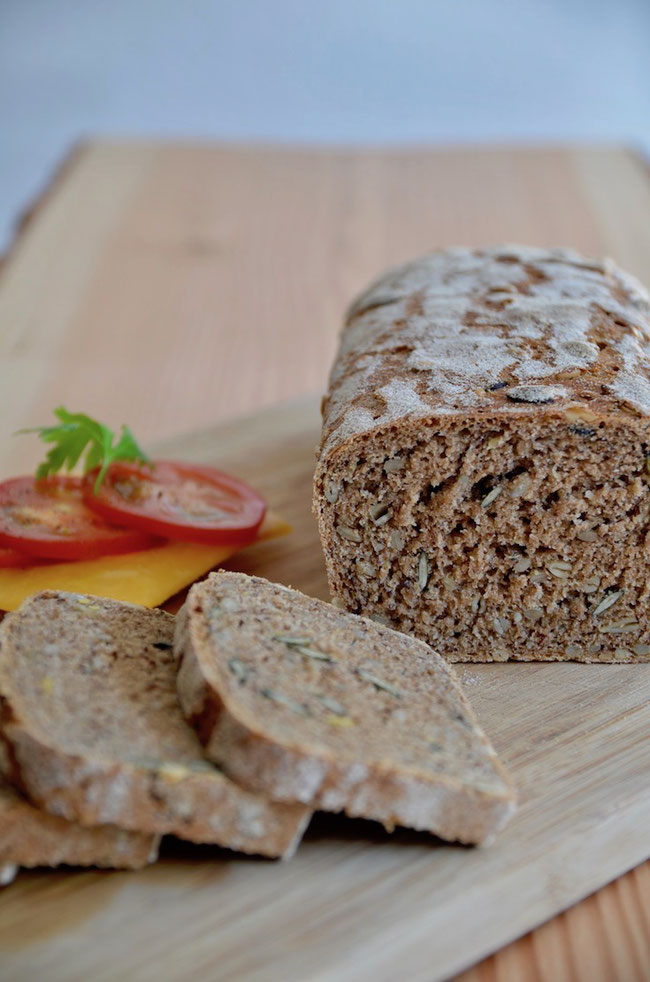

Vollkornbrot

Vollkornbrot - lecker und gesund!
Zutaten
- 500 g Vollkornweizenmehl
- 50 g Sonnenblumenkerne
- 50 g Kürbiskerne
- 30 g Leinsamen geschrotet
- 5 g Hefe
- 10 g Salz
- 350 ml Wasser
- Zuerst mischen wir die Sonnenblumenkerne und Kürbiskerne in einer Schüssel und übergießen sie mit kochendem Wasser. So lassen wir die Mischung drei Stunden einweichen.
- Die Hefe lösen wir in kaltem Wasser auf.
- In einer großen Schüssel mischen wir das Mehl mit den Leinsamen und dem Hefewasser. Alles zu einem Teig verkneten und abgedeckt etwa drei Stunden gehen lassen.
- Nach drei Stunden gießen wir die Körnermischung durch ein Sieb ab und lassen sie gut abtropfen.
- Wir vermischen den Teig mit den Kernen und geben das Salz hinzu. Alles kurz durchkneten und zu einer Rolle formen.
- Die Teigrolle gut bemehlen und in eine Backform geben.
- Mit einem Geschirrtuch abdecken und eine weitere Stunde bei Zimmertemperatur gehen lassen.
- Den Ofen in der Zwischenzeit auf 250 C° Ober-Unterhitze vorheizen, auf den Boden ein Blech mit etwas kochendem Wasser stellen und das Brot in der Mitte einschieben.
- 10 Minuten mit dem Blech mit Wasser backen, danach das Blech herausnehmen und weitere 10 Minuten backen.
- Nach 20 Minuten drehen wir die Temperatur auf 180 C° herunter und backen das Brot weitere 20 Minuten. Ich nehme es dafür gerne aus der Form heraus und backe es auf dem Blech fertig.